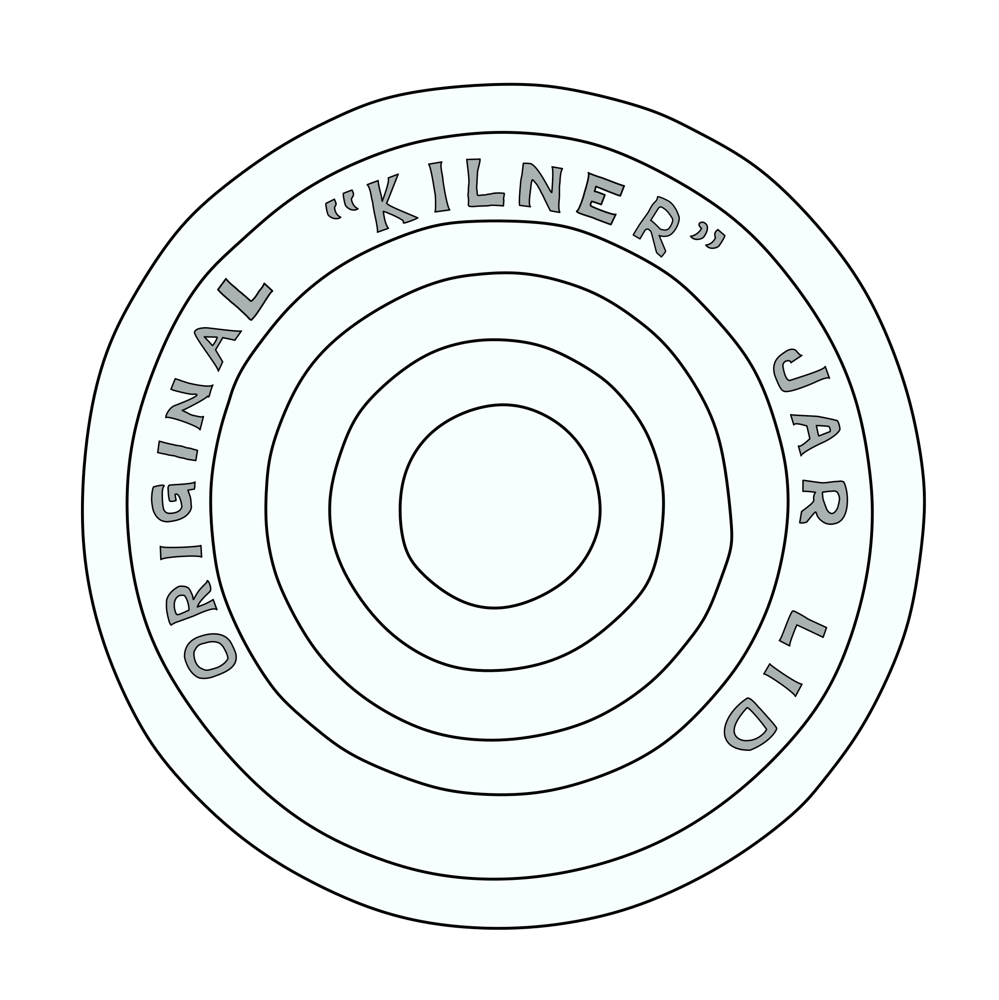

Vintage
Kilner
Jars.
About this website
This website contains descriptions, illustrations and images of vintage Kilner® preserving jars. The design of the jar has changed several times since its creation and most components are not interchangeable.
Using the timeline below, you may be able to identify your own vintage jars and acquire missing parts to keep them in use.
The history of the Kilner® Jar
1919 — 1948
Original "Kilner" Jar
Green glass between 1918 and 1932. Clear glass until 1948.

1948 — 1969
Improved "Kilner" Jar
1969 — 1978
Dual Purpose Jar

1978 — 2000
Ravenhead "Red Top"

2000 onwards
New Kilner Jar